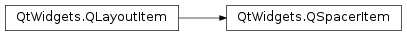

QSpacerItem¶
Synopsis¶
Functions¶
- def
changeSize(w, h[, hData=QSizePolicy.Minimum[, vData=QSizePolicy.Minimum]]) - def
sizePolicy()
Detailed Description¶
The
PySide2.QtWidgets.QSpacerItemclass provides blank space in a layout.Normally, you don’t need to use this class directly. Qt’s built-in layout managers provide the following functions for manipulating empty space in layouts:
-
class
PySide2.QtWidgets.QSpacerItem(w, h[, hData=QSizePolicy.Minimum[, vData=QSizePolicy.Minimum]])¶ Parameters: - h –
PySide2.QtCore.int - hData –
PySide2.QtWidgets.QSizePolicy.Policy - w –
PySide2.QtCore.int - vData –
PySide2.QtWidgets.QSizePolicy.Policy
Constructs a spacer item with preferred width
w, preferred heighth, horizontal size policyhPolicyand vertical size policyvPolicy.The default values provide a gap that is able to stretch if nothing else wants the space.
- h –
-
PySide2.QtWidgets.QSpacerItem.changeSize(w, h[, hData=QSizePolicy.Minimum[, vData=QSizePolicy.Minimum]])¶ Parameters: - w –
PySide2.QtCore.int - h –
PySide2.QtCore.int - hData –
PySide2.QtWidgets.QSizePolicy.Policy - vData –
PySide2.QtWidgets.QSizePolicy.Policy
Changes this spacer item to have preferred width
w, preferred heighth, horizontal size policyhPolicyand vertical size policyvPolicy.The default values provide a gap that is able to stretch if nothing else wants the space.
Note that if is called after the spacer item has been added to a layout, it is necessary to invalidate the layout in order for the spacer item’s new size to take effect.
See also
QSpacerItem.invalidate()- w –
-
PySide2.QtWidgets.QSpacerItem.sizePolicy()¶ Return type: PySide2.QtWidgets.QSizePolicyReturns the size policy of this item.
© 2018 The Qt Company Ltd. Documentation contributions included herein are the copyrights of their respective owners. The documentation provided herein is licensed under the terms of the GNU Free Documentation License version 1.3 as published by the Free Software Foundation. Qt and respective logos are trademarks of The Qt Company Ltd. in Finland and/or other countries worldwide. All other trademarks are property of their respective owners.